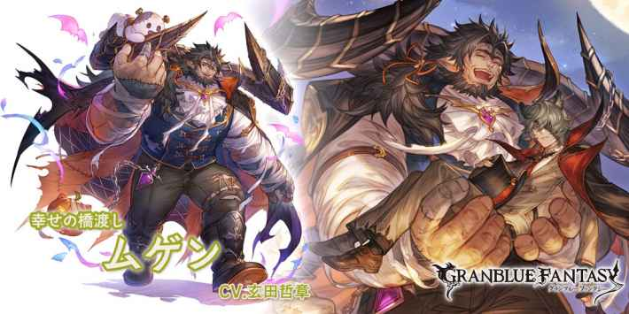
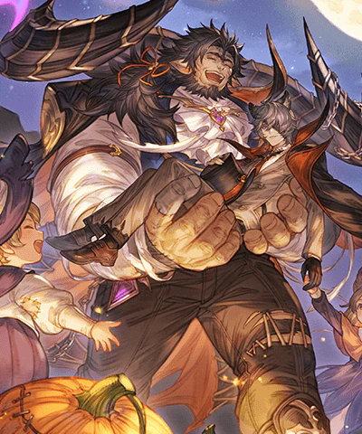
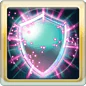
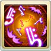
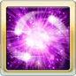

光ムゲン(ハロウィン)
基本資訊
| 定位 | 防禦 |
| 得意武器 | 格鬥/樂器 |
| 種族 | 牛角 |
| CV | 玄田哲章 |
立繪
上限解放前
上限解放後
奧義
| ムゲン連続アタック | |
| 4.5倍光屬性傷害 光屬性角色HP回復(最多2500) |
技能
|  不可再使用 |
外套の護り |
| 自己 ・我方單體援護效果(永久/不可消除) ・暗屬性傷害-30%(永久/不可消除) ・受到的傷害轉為暗屬性(永久/不可消除) #不可再使用 |
|
|  CD:12 |
菓子の唄 |
| 光屬性角色 ・光屬性攻擊+30%×5T ・爆擊率上升(100%機率1.2倍傷害)×5T ・傷害上限+15%×5T ・普攻予傷+20%×5T #對象最大HP-30%(最多-90%/不可回復) |
|
|  CD:6 |
祭戯の体躯 |
| 自己祭戯の体躯效果(不可消除)×1T ・爆擊率上升(100%機率4倍傷害) ・傷害上限+50% 自己不死身效果(不可消除/3次) #最大HP-30%(不可回復) |
被動技能
 |
しあわせパンケーキ |
| ・敵對心上升 ・受到傷害時，隨機敵人1倍光屬性傷害×6次 |
|
|
びっくりのじゅんび |
| 光屬性角色最大HP每-30%就有20%光屬性追擊(最多60%) |
武器